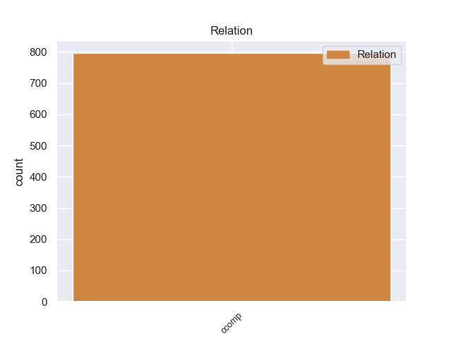
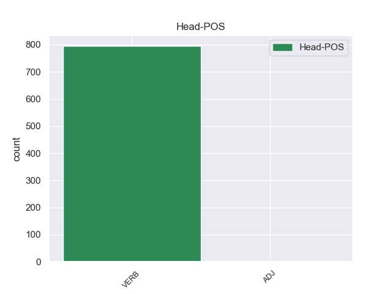
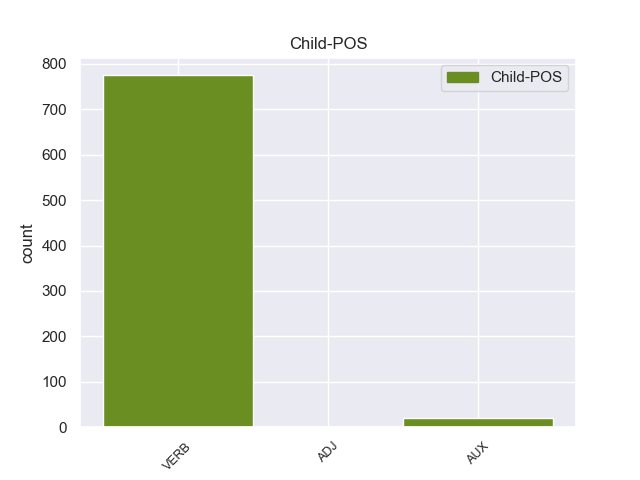

Distribution of features within this leaf



Agreement Rules sorted by frequency.
- When the dependent token is the clausal complement(ccomp) of the head token, and the head token is VERB
1 El _ _ _ _ 0 _ _ _
2 representante _ _ _ _ 0 _ _ _
3 de _ _ _ _ 0 _ _ _
4 el _ _ _ _ 0 _ _ _
5 Frente _ _ _ _ 0 _ _ _
6 Cívico _ _ _ _ 0 _ _ _
7 en _ _ _ _ 0 _ _ _
8 Tribunal _ _ _ _ 0 _ _ _
9 de _ _ _ _ 0 _ _ _
10 Cuentas _ _ _ _ 0 _ _ _
11 de _ _ _ _ 0 _ _ _
12 la _ _ _ _ 0 _ _ _
13 provincia _ _ _ _ 0 _ _ _
14 de _ _ _ _ 0 _ _ _
15 Córdoba _ _ _ _ 0 _ _ _
16 , _ _ _ _ 0 _ _ _
17 José _ _ _ _ 0 _ _ _
18 Medina _ _ _ _ 0 _ _ _
19 , _ _ _ _ 0 _ _ _
20 denunció denunciar VERB _ Mood=Ind|Number=Sing|Person=3|Tense=Past|VerbForm=Fin 0 _ _ _
21 que _ _ _ _ 0 _ _ _
22 el _ _ _ _ 0 _ _ _
23 gobierno _ _ _ _ 0 _ _ _
24 de _ _ _ _ 0 _ _ _
25 Schiaretti _ _ _ _ 0 _ _ _
26 pidió pidiar VERB _ Mood=Ind|Number=Sing|Person=3|Tense=Past|VerbForm=Fin 20 ccomp _ _
27 autorización _ _ _ _ 0 _ _ _
28 para _ _ _ _ 0 _ _ _
29 realizar _ _ _ _ 0 _ _ _
30 reparaciones _ _ _ _ 0 _ _ _
31 en _ _ _ _ 0 _ _ _
32 la _ _ _ _ 0 _ _ _
33 Casa _ _ _ _ 0 _ _ _
34 de _ _ _ _ 0 _ _ _
35 las _ _ _ _ 0 _ _ _
36 Tejas _ _ _ _ 0 _ _ _
37 por _ _ _ _ 0 _ _ _
38 más _ _ _ _ 0 _ _ _
39 de _ _ _ _ 0 _ _ _
40 un _ _ _ _ 0 _ _ _
41 millón _ _ _ _ 0 _ _ _
42 de _ _ _ _ 0 _ _ _
43 pesos _ _ _ _ 0 _ _ _
44 el _ _ _ _ 0 _ _ _
45 pasado _ _ _ _ 0 _ _ _
46 19 _ _ _ _ 0 _ _ _
47 de _ _ _ _ 0 _ _ _
48 octubre _ _ _ _ 0 _ _ _
49 , _ _ _ _ 0 _ _ _
50 cuando _ _ _ _ 0 _ _ _
51 ya _ _ _ _ 0 _ _ _
52 estaba _ _ _ _ 0 _ _ _
53 la _ _ _ _ 0 _ _ _
54 decisión _ _ _ _ 0 _ _ _
55 de _ _ _ _ 0 _ _ _
56 demoler _ _ _ _ 0 _ _ _
57 el _ _ _ _ 0 _ _ _
58 edificio _ _ _ _ 0 _ _ _
59 . _ _ _ _ 0 _ _ _
Disagree Examples:
1 Esta _ _ _ _ 0 _ _ _
2 respuesta _ _ _ _ 0 _ _ _
3 , _ _ _ _ 0 _ _ _
4 aludiendo _ _ _ _ 0 _ _ _
5 a _ _ _ _ 0 _ _ _
6 criterios _ _ _ _ 0 _ _ _
7 técnicos _ _ _ _ 0 _ _ _
8 para _ _ _ _ 0 _ _ _
9 justificar _ _ _ _ 0 _ _ _
10 el _ _ _ _ 0 _ _ _
11 cambio _ _ _ _ 0 _ _ _
12 de _ _ _ _ 0 _ _ _
13 postura _ _ _ _ 0 _ _ _
14 de _ _ _ _ 0 _ _ _
15 el _ _ _ _ 0 _ _ _
16 consorcio _ _ _ _ 0 _ _ _
17 , _ _ _ _ 0 _ _ _
18 ha _ _ _ _ 0 _ _ _
19 enervado _ _ _ _ 0 _ _ _
20 a _ _ _ _ 0 _ _ _
21 la _ _ _ _ 0 _ _ _
22 oposición _ _ _ _ 0 _ _ _
23 , _ _ _ _ 0 _ _ _
24 y _ _ _ _ 0 _ _ _
25 Albert _ _ _ _ 0 _ _ _
26 Rivera _ _ _ _ 0 _ _ _
27 ( _ _ _ _ 0 _ _ _
28 C _ _ _ _ 0 _ _ _
29 's _ _ _ _ 0 _ _ _
30 ) _ _ _ _ 0 _ _ _
31 ha _ _ _ _ 0 _ _ _
32 indicado indicar VERB _ Gender=Masc|Number=Sing|Tense=Past|VerbForm=Part 0 _ _ _
33 que _ _ _ _ 0 _ _ _
34 CiU _ _ _ _ 0 _ _ _
35 trata tratar VERB _ Mood=Ind|Number=Sing|Person=3|Tense=Pres|VerbForm=Fin 32 ccomp _ _
36 de _ _ _ _ 0 _ _ _
37 confundir _ _ _ _ 0 _ _ _
38 sus _ _ _ _ 0 _ _ _
39 intereses _ _ _ _ 0 _ _ _
40 partidistas _ _ _ _ 0 _ _ _
41 con _ _ _ _ 0 _ _ _
42 los _ _ _ _ 0 _ _ _
43 de _ _ _ _ 0 _ _ _
44 toda _ _ _ _ 0 _ _ _
45 Catalunya _ _ _ _ 0 _ _ _
46 . _ _ _ _ 0 _ _ _
1 Los _ _ _ _ 0 _ _ _
2 vecinos _ _ _ _ 0 _ _ _
3 de _ _ _ _ 0 _ _ _
4 la _ _ _ _ 0 _ _ _
5 zona _ _ _ _ 0 _ _ _
6 cuentan contar VERB _ Mood=Ind|Number=Plur|Person=3|Tense=Pres|VerbForm=Fin 0 _ _ _
7 que _ _ _ _ 0 _ _ _
8 el _ _ _ _ 0 _ _ _
9 trozo _ _ _ _ 0 _ _ _
10 más _ _ _ _ 0 _ _ _
11 grande _ _ _ _ 0 _ _ _
12 jamás _ _ _ _ 0 _ _ _
13 encontrado _ _ _ _ 0 _ _ _
14 en _ _ _ _ 0 _ _ _
15 la _ _ _ _ 0 _ _ _
16 zona _ _ _ _ 0 _ _ _
17 alcanzó alcanzar VERB _ Mood=Ind|Number=Sing|Person=3|Tense=Past|VerbForm=Fin 6 ccomp _ _
18 los _ _ _ _ 0 _ _ _
19 120 _ _ _ _ 0 _ _ _
20 gramos _ _ _ _ 0 _ _ _
21 y _ _ _ _ 0 _ _ _
22 que _ _ _ _ 0 _ _ _
23 también _ _ _ _ 0 _ _ _
24 ha _ _ _ _ 0 _ _ _
25 habido _ _ _ _ 0 _ _ _
26 hallazgos _ _ _ _ 0 _ _ _
27 de _ _ _ _ 0 _ _ _
28 piezas _ _ _ _ 0 _ _ _
29 de _ _ _ _ 0 _ _ _
30 80 _ _ _ _ 0 _ _ _
31 gramos _ _ _ _ 0 _ _ _
32 . _ _ _ _ 0 _ _ _
1 La _ _ _ _ 0 _ _ _
2 repercusión _ _ _ _ 0 _ _ _
3 internacional _ _ _ _ 0 _ _ _
4 que _ _ _ _ 0 _ _ _
5 alcanzó _ _ _ _ 0 _ _ _
6 este _ _ _ _ 0 _ _ _
7 bombardeo _ _ _ _ 0 _ _ _
8 , _ _ _ _ 0 _ _ _
9 unido _ _ _ _ 0 _ _ _
10 a _ _ _ _ 0 _ _ _
11 su _ _ _ _ 0 _ _ _
12 utilización _ _ _ _ 0 _ _ _
13 propagandística _ _ _ _ 0 _ _ _
14 , _ _ _ _ 0 _ _ _
15 ha _ _ _ _ 0 _ _ _
16 hecho hacer VERB _ Gender=Masc|Number=Sing|Tense=Past|VerbForm=Part 0 _ _ _
17 que _ _ _ _ 0 _ _ _
18 sea ser VERB _ Mood=Sub|Number=Sing|Person=3|Tense=Pres|VerbForm=Fin 16 ccomp _ _
19 una _ _ _ _ 0 _ _ _
20 masacre _ _ _ _ 0 _ _ _
21 mundialmente _ _ _ _ 0 _ _ _
22 conocida _ _ _ _ 0 _ _ _
23 y _ _ _ _ 0 _ _ _
24 considerada _ _ _ _ 0 _ _ _
25 como _ _ _ _ 0 _ _ _
26 un _ _ _ _ 0 _ _ _
27 icono _ _ _ _ 0 _ _ _
28 antibélico _ _ _ _ 0 _ _ _
29 . _ _ _ _ 0 _ _ _
1 Resulta _ _ _ _ 0 _ _ _
2 que _ _ _ _ 0 _ _ _
3 pasando _ _ _ _ 0 _ _ _
4 por _ _ _ _ 0 _ _ _
5 allí _ _ _ _ 0 _ _ _
6 he _ _ _ _ 0 _ _ _
7 visto ver VERB _ Gender=Masc|Number=Sing|Tense=Past|VerbForm=Part 0 _ _ _
8 que _ _ _ _ 0 _ _ _
9 el _ _ _ _ 0 _ _ _
10 local _ _ _ _ 0 _ _ _
11 en _ _ _ _ 0 _ _ _
12 cuestión _ _ _ _ 0 _ _ _
13 está estar VERB _ Mood=Ind|Number=Sing|Person=3|Tense=Pres|VerbForm=Fin 7 ccomp _ _
14 en _ _ _ _ 0 _ _ _
15 obras _ _ _ _ 0 _ _ _
16 , _ _ _ _ 0 _ _ _
17 y _ _ _ _ 0 _ _ _
18 por _ _ _ _ 0 _ _ _
19 no _ _ _ _ 0 _ _ _
20 tener _ _ _ _ 0 _ _ _
21 no _ _ _ _ 0 _ _ _
22 tiene _ _ _ _ 0 _ _ _
23 ni _ _ _ _ 0 _ _ _
24 puerta _ _ _ _ 0 _ _ _
25 . _ _ _ _ 0 _ _ _
1 Además _ _ _ _ 0 _ _ _
2 , _ _ _ _ 0 _ _ _
3 en _ _ _ _ 0 _ _ _
4 su _ _ _ _ 0 _ _ _
5 respaldo _ _ _ _ 0 _ _ _
6 a _ _ _ _ 0 _ _ _
7 el _ _ _ _ 0 _ _ _
8 delantero _ _ _ _ 0 _ _ _
9 de _ _ _ _ 0 _ _ _
10 el _ _ _ _ 0 _ _ _
11 Chelsea _ _ _ _ 0 _ _ _
12 , _ _ _ _ 0 _ _ _
13 ha _ _ _ _ 0 _ _ _
14 añadido añadir VERB _ Gender=Masc|Number=Sing|Tense=Past|VerbForm=Part 0 _ _ _
15 que _ _ _ _ 0 _ _ _
16 en _ _ _ _ 0 _ _ _
17 la _ _ _ _ 0 _ _ _
18 selección _ _ _ _ 0 _ _ _
19 cuenta contar VERB _ Mood=Ind|Number=Sing|Person=3|Tense=Pres|VerbForm=Fin 14 ccomp _ _
20 con _ _ _ _ 0 _ _ _
21 el _ _ _ _ 0 _ _ _
22 apoyo _ _ _ _ 0 _ _ _
23 de _ _ _ _ 0 _ _ _
24 el _ _ _ _ 0 _ _ _
25 resto _ _ _ _ 0 _ _ _
26 de _ _ _ _ 0 _ _ _
27 jugadores _ _ _ _ 0 _ _ _
28 . _ _ _ _ 0 _ _ _